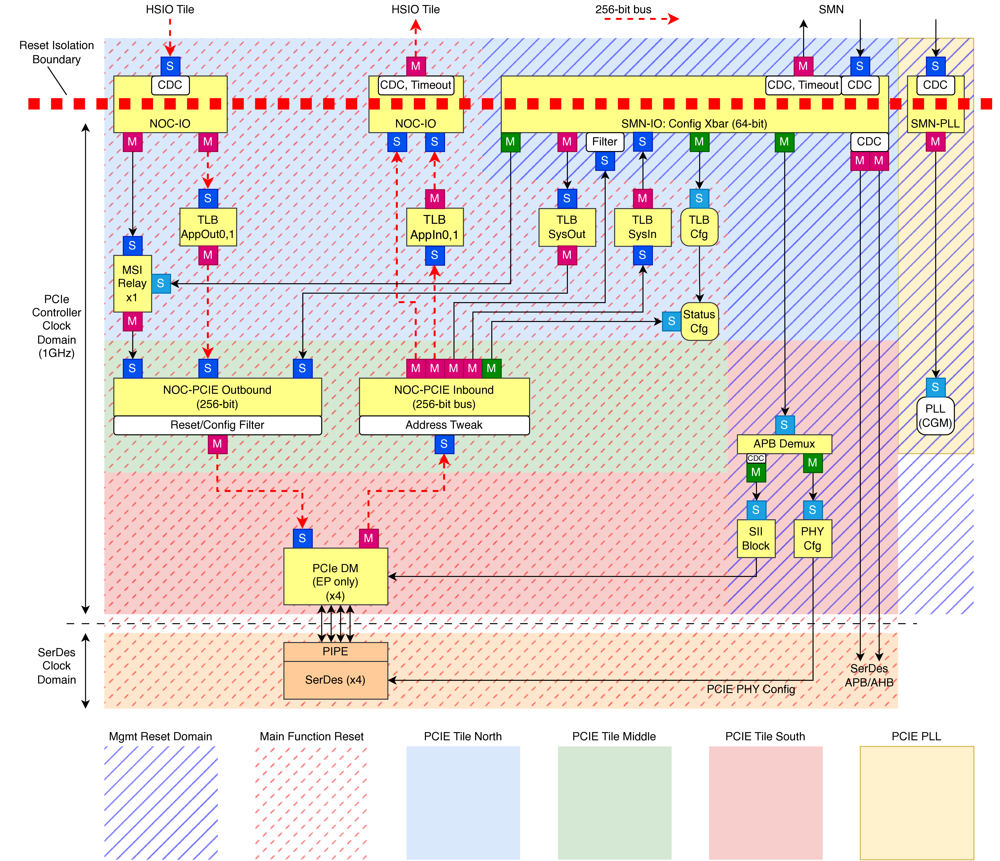
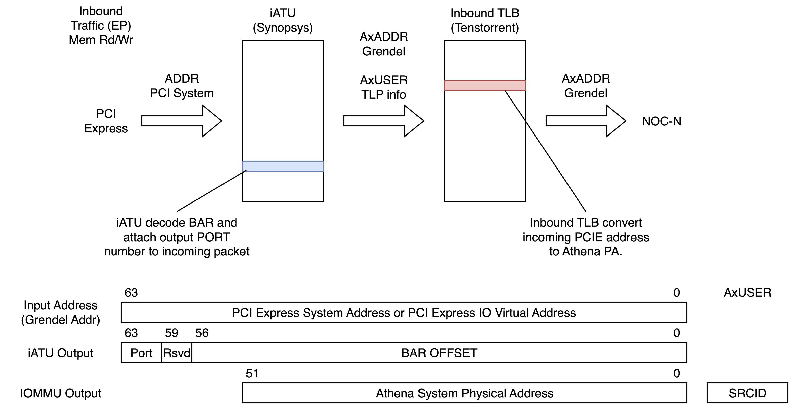
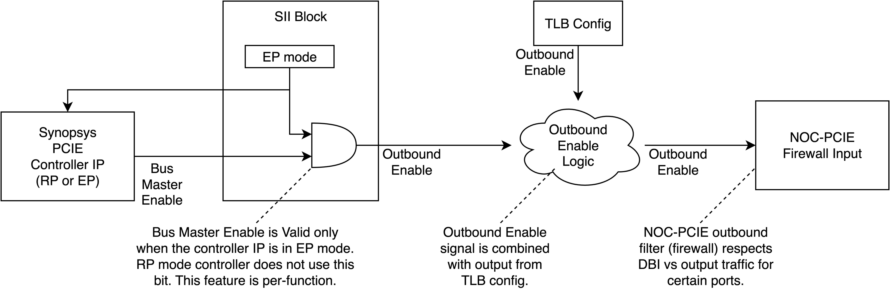

Keraunos Pcie Tile
Converted from PDF: keraunos_pcie_tile.pdf
Keraunos PCIE Tile Specification Grendel System-on-Package (SOP) Subsystem
Version ASCIIDOC Conversion, 2025-08-06: Pre-release version

Page 2
Table of Contents
1. Revision History… … … … … … … … … … … … … … … … … … … … … … … … … … … … … … … … … … … … 1
2. Keraunos PCI Express Tile (PCIE Tile) … … … … … … … … … … … … … … … … … … … … … … … … … … … … . . 2
2.1. External Interface (Clock, Reset, Interrupt, Memory Interface) … … … … … … … … … … … … … … … … … … … . . 2 2.2. PCI Express Subsystem… … … … … … … … … … … … … … … … … … … … … … … … … … … … … … … … 3 2.2.1. PCI Express Controller… … … … … … … … … … … … … … … … … … … … … … … … … … … … … … . . 3 PCI Express Controller IP … … … … … … … … … … … … … … … … … … … … … … … … … … … … … … . 3 System Information Interface (SII) and Configuration Intercept Interface (CII) … … … … … … … … … … … … … . 4 Interrupt Support… … … … … … … … … … … … … … … … … … … … … … … … … … … … … … … … … 5 SerDes Lane Reversal Support … … … … … … … … … … … … … … … … … … … … … … … … … … … … … 5 Special Reset Support (Isolation Support) … … … … … … … … … … … … … … … … … … … … … … … … … . 6 Precise Timer Measurement (PTM) Support… … … … … … … … … … … … … … … … … … … … … … … … . . 7 Power State Support… … … … … … … … … … … … … … … … … … … … … … … … … … … … … … … … . 7 Flit mode Support… … … … … … … … … … … … … … … … … … … … … … … … … … … … … … … … … 7 2.2.2. PCI Express PHY (SerDes) … … … … … … … … … … … … … … … … … … … … … … … … … … … … … . 7 2.3. Address Translation… … … … … … … … … … … … … … … … … … … … … … … … … … … … … … … … … 8 2.3.1. Translation Lookaside Buffer (TLB) … … … … … … … … … … … … … … … … … … … … … … … … … … . 8 Outbound TLB … … … … … … … … … … … … … … … … … … … … … … … … … … … … … … … … … . . 9 Inbound TLB … … … … … … … … … … … … … … … … … … … … … … … … … … … … … … … … … … 10 Memory Access … … … … … … … … … … … … … … … … … … … … … … … … … … … … … … … … … . 11 Keraunos TLB Configuration and Potential Test Scenario … … … … … … … … … … … … … … … … … … … … 11 2.4. Config Register… … … … … … … … … … … … … … … … … … … … … … … … … … … … … … … … … … . 13 2.5. Intra-Tile Fabric … … … … … … … … … … … … … … … … … … … … … … … … … … … … … … … … … . . 14 2.5.1. Ports & Switches … … … … … … … … … … … … … … … … … … … … … … … … … … … … … … … … . 14 2.5.2. Isolation Support … … … … … … … … … … … … … … … … … … … … … … … … … … … … … … … … 15 2.5.3. Sideband Signals … … … … … … … … … … … … … … … … … … … … … … … … … … … … … … … … 15 2.5.4. SMN-IO … … … … … … … … … … … … … … … … … … … … … … … … … … … … … … … … … … . . 19 2.5.5. NOC-IO … … … … … … … … … … … … … … … … … … … … … … … … … … … … … … … … … … . . 19 2.5.6. NOC-PCIE … … … … … … … … … … … … … … … … … … … … … … … … … … … … … … … … … . . 20 2.5.7. Timeout Support … … … … … … … … … … … … … … … … … … … … … … … … … … … … … … … … 21 2.5.8. Control Traffic from PCI Express Upstream Port (USP)… … … … … … … … … … … … … … … … … … … … 21 Outbound Traffic Control … … … … … … … … … … … … … … … … … … … … … … … … … … … … … … 21 Inbound Traffic Control … … … … … … … … … … … … … … … … … … … … … … … … … … … … … … . 22 2.6. Feedback from Former Generation (BlackHole) … … … … … … … … … … … … … … … … … … … … … … … . . 22 2.7. Performance Requirement and Potential Test Scenario … … … … … … … … … … … … … … … … … … … … … . 22 2.7.1. DMA… … … … … … … … … … … … … … … … … … … … … … … … … … … … … … … … … … … … 22 2.7.2. PIO… … … … … … … … … … … … … … … … … … … … … … … … … … … … … … … … … … … … . 23 2.8. Reset Sequence and Potential Test Scenario… … … … … … … … … … … … … … … … … … … … … … … … … 23 2.8.1. Power-on Reset (aka Cold Reset) … … … … … … … … … … … … … … … … … … … … … … … … … … … 23 2.8.2. Function-Level Reset / Hot Reset … … … … … … … … … … … … … … … … … … … … … … … … … … . . 23 Case 1: FW driven reset sequence … … … … … … … … … … … … … … … … … … … … … … … … … … … . . 23 Case 2: FW driven reset sequence… … … … … … … … … … … … … … … … … … … … … … … … … … … . . 23 2.8.3. Other Reset Sequence (e.g., Button Reset)… … … … … … … … … … … … … … … … … … … … … … … … . 24 2.9. Interrupt Delivery and Potential Test Scenario … … … … … … … … … … … … … … … … … … … … … … … … 24 2.10. PCIe hang scenario and the solution … … … … … … … … … … … … … … … … … … … … … … … … … … … 24 2.11. MSI Relay Unit… … … … … … … … … … … … … … … … … … … … … … … … … … … … … … … … … … 25 2.11.1. Unit Interface… … … … … … … … … … … … … … … … … … … … … … … … … … … … … … … … … 25 2.11.2. Unit Address Map (CSR) … … … … … … … … … … … … … … … … … … … … … … … … … … … … … . 26 2.11.3. Pending Bit Array (PBA) and Interrupt Pending (IP) Management … … … … … … … … … … … … … … … … 26
Page 3
Chapter 1. Revision History | Page 1
Chapter 1. Revision History Revision Date Author Descriptions 0.0.000 01.16.2025 Yasuo Ishii Keraunos PCIE specification 0.0.001 01.17.2025 Yasuo Ishii Added reset sequence 0.0.002 01.17.2025 Yasuo Ishii Added MSI relay unit 0.1.000 01.18.2025 Yasuo Ishii Adjust data bus, address map (Version 0.1) 0.1.001 01.18.2025 Yasuo Ishii Fix typo 0.1.002 01.18.2025 Yasuo Ishii Added potential test case programming guide 0.1.003 01.18.2025 Yasuo Ishii Fix revision number before 0.1.000 0.1.004 01.19.2025 Yasuo Ishii Other minor fix (list up components etc…) 0.1.005 01.19.2025 Yasuo Ishii Add more detail for PCIE TLB 0.1.006 01.19.2025 Yasuo Ishii Add CSR list 0.1.007 01.21.2025 Yasuo Ishii Fix intra-fabric detail (data bus, routing / filter description) 0.1.008 01.22.2025 Yasuo Ishii Apply corrections for NOC-PCIE, SMN-IO and port definitions 0.1.009 01.22.2025 Yasuo Ishii Fix routing table for NOC-PCIE 0.1.010 01.22.2025 Yasuo Ishii Add isolation clamp logic definition 0.1.011 01.28.2025 Yasuo Ishii Remove IOMMU, fix address mapping to adjust to Keraunos chiplet v0.9 candidate 0.7.000 01.28.2025 Yasuo Ishii PCIE tile v0.7 candidate 0.7.001 01.30.2025 Yasuo Ishii Correct CSR definition 0.7.002 01.31.2025 Yasuo Ishii Correct CSR definition for SII block 0.7.003 02.04.2025 Yasuo Ishii Add clarification for flit mode support 0.7.004 02.22.2025 Yasuo Ishii Adjust address map for NOC / SMN 0.7.005 02.25.2025 Yasuo Ishii Add more clarity on FLR reset flow and isolation 0.7.006 02.26.2025 Yasuo Ishii Updates figure for AXI network isolation for FLR 0.7.007 02.26.2025 Yasuo Ishii Add detail description & interrupt definition for timeout support 0.7.008 02.28.2025 Yasuo Ishii Updates CII hold register information 0.7.009 03.04.2025 Yasuo Ishii Revert change for 0.7.008 (CII hold register information) 0.7.010 03.05.2025 Yasuo Ishii Update NOC-PCIE routing to support System Ready access for FLR 0.7.011 03.05.2025 Yasuo Ishii Update NOC-PCIE routing to extend System Ready region size to be 128B 0.7.012 03.14.2025 Yasuo Ishii Remove msi_axisideband from the module definition 0.7.013 03.21.2025 Yasuo Ishii Fixes typos in the specification, update default TLBSys setting 0.7.014 03.23.2025 Yasuo Ishii Update cold reset sequence 0.7.015 03.24.2025 Yasuo Ishii Fix default TLBSys setting based on feedback 0.7.016 03.27.2025 Yasuo Ishii Added block diagram and clarification for PCIE block isolation 0.7.017 03.28.2025 Yasuo Ishii Added more detail on isolation management 0.7.018 04.05.2025 Yasuo Ishii Add clarification based on feedback 0.7.019 04.11.2025 Yasuo Ishii Add clarification for hot reset 0.7.020 04.17.2025 Yasuo Ishii Add DFD under APB demux space 0.7.021 06.06.2025 Yasuo Ishii Added lane reversal support for PCIE SerDes 0.7.022 07.29.2025 Xin He Add user bit mapping for inbound/outbound TLB 0.7.023 08.06.2025 Xin He Add PCIe hang scenario and the solution
Table 1. Change History
Keraunos PCIE Tile Specification | © Tenstorrent Confidential

Page 4
2.1. External Interface (Clock, Reset, Interrupt, Memory Interface) | Page 2
Chapter 2. Keraunos PCI Express Tile (PCIE Tile) Figure 1 shows the high-level block diagram of the PCI Express Tile.
This tile includes the following functionalities:
• Synopsys PCIE Controller IP (Gen6 x4) • Synopsys PCIE PHY IP (Gen6 x4) • SII block for PCIE Controller • Clock & reset Control for PCIE Controller. • MSI relay unit (catcher & thrower) • Translation lookaside buffer for address translation • PLL (CGM) for internal clock supply • Intra-tile fabric
Figure 1. PCI Express Tile
2.1. External Interface (Clock, Reset, Interrupt, Memory Interface) The PCIe Tile has a dedicated clock and reset control module because PCIE tile uses its own dedicated voltage domain.
Most of the standard cell logic in the PCIe Tile uses the PCIE clock. To utilize this main clock, all interface signals for this tile has clock domain crossing logic. The required clocks are listed in Table 2.
Keraunos PCIE Tile Specification | © Tenstorrent Confidential

Page 5
2.2. PCI Express Subsystem | Page 3
Name Frequency Description NOC Clock 1.65GHz Clock for external NOC interface. This clock is not used internally. SOC Clock 400MHz Clock for SMN interface. This clock is not used internally. PCIE Clock 1.0GHz Main clock for this module. AHB Clock 500MHz SerDes APB / AHB clock, this clock needs to be between 500MHz - 600MHz. Reference Clock 100MHz Clock for PCIe SerDes and PLL.
Table 2. PCIE Tile Clock
PLL and SOC clock domain is reset by dedicated system management network reset signal. To permit to deassert reset separately, AXI interface force output valid signal to be 0 while the reset signal is asserted.
Name Signal Name Reset Type Description Management Reset pcie_sii_reset_ctrl Cold SMN-IO, CGM PLL Main Reset pcie_reset_ctrl Cold, Warm NOC-PCIe, TLBs, Config Registers, Controllers, SerDes Isolation Request isolate_req 1-bit interface to disconnect PCIE SS from external world
Table 3. PCIE Tile Reset
Name Description Application AXI Manager Port 256-bit data width Application AXI Subordinate Port 256-bit data width System Management AXI Manager Port 64-bit data width System Management AXI Subordinate Port 64-bit data width PCIE PLL APB Subordinate Port 32-bit data width
Table 4. PCIE Tile Memory Interface
Name Description function_level_reset Function Level Reset Request hot_reset_requested Hot Reset Request config_update Configuration Update is Captured ras_error RAS Error dma_completion DMA Transfer Completion controller_misc_int The other interrupt from Controller IP noc_timeout NOC / SMN TNIU timeout (total 3-bit)
Table 5. PCIE Tile Interrupt
2.2. PCI Express Subsystem
2.2.1. PCI Express Controller
The PCI Express Tile integrates a PCI Express controller to support various functionalities.
This controller IP does not support IDE (encryption).
PCI Express Controller IP
The PCI Express Tile deploys the Synopsys PCI Express / CXL Controller. It features one PCI Express controller, as detailed in Table 6.
Config Type CXL.mem Lane Interrupt Description Controller 0 (App0) DM No x4 MSI-X / MSI Primary PCIE Controller
Table 6. PCI Express Controller
Keraunos PCIE is designed / used only for EP mode although the controller is DM controller
Keraunos PCIE Tile Specification | © Tenstorrent Confidential

Page 6
2.2. PCI Express Subsystem | Page 4
PCI Express Gen6 starts supporting flit mode. This feature is mandatory for Gen6 links. However, this feature is optional when the Gen6 controller is linked up as Gen5 or earlier generations. The Keraunos PCI Express tile supports flit mode only when the controller is linked up as Gen6. When the controller links up as Gen5 or earlier generations, only non-flit mode (classical PCIE TLP format) is supported.
For AXI-to-PCIe conversion, the controller converts CA (Completer Abort) and UR (Unsupported Request) to SLVERR and DECERR, respectively (Table 7). DECERR is typically treated as a software issue (e.g., software incorrectly requested unexpected TLPs), while SLVERR is generally considered a hardware error (e.g., an uncorrectable ECC error detected in the completer).
PCI Express Error Type AXI Error Type Completer Abort (CA) SLVERR Unsupported Request (UR) DECERR
Table 7. PCI Express Controller Error Response Mapping
Since the Synopsys controller IP converts both DECERR and SLVERR to CA, the PCIE Controller IP wrapper converts them to appropriate error types (Table 8).
AXI Response from NOC-PCIE AXI Response to PCIE Controller 2’b00 (OKAY) mstr_*resp[1:0] = 2’b00 (OKAY), mstr_*misc_info_cpl_stat[2:0]=3’b000 (SC) 2’b01 (EXOKAY) mstr_*resp[1:0] = 2’b01 (EXOKAY), mstr_*misc_info_cpl_stat[2:0]=3’b000 (SC) 2’b10 (SLVERR) mstr_*resp[1:0] = 2’b00 (OKAY), mstr_*misc_info_cpl_stat[2:0]=3’b100 (CA) 2’b11 (DECERR) mstr_*resp[1:0] = 2’b00 (OKAY), mstr_*misc_info_cpl_stat[2:0]=3’b001 (UR)
Table 8. NOC-PCIE Error Response to PCIE Controller Conversion
Table 9 shows BAR configurations for the PCIE controller.
Function BAR0/1 BAR2/3 BAR4/5 Description App0, PF0 4GB 1MB 512GB Grendel main function
Table 9. Keraunos PCIE Function Definitions
System Information Interface (SII) and Configuration Intercept Interface (CII)
The Synopsys PCI Express controller IP includes a System Information Interface (SII) to pass configuration information to the PCI Express controller. The SII interface is driven by a block containing memory-mapped registers.
The SII block interfaces with each controller to specify its bus number as a root port (e.g., app_bus_num, app_dev_num). This port assignment is expected to be completed even if the port is disabled.
Keraunos use-case is only EP, RP related feature does not need to be tested.
SII block tracks almost all configuration information from controller IP by using Configuration Intercept Interface (CII). When the controller receives the update of configuration registers, it is exposed from CII interface. When a given configuration register is updated (e.g., flip of cfg_subbus_num), it records the update information and send interrupt to SMC PLIC. The recording is done by RW1C register so that firmware can recognize which bit was flipped and which change was actually captured already.
This is the pseudo code how system captures the SII configuration information difference.
// CII tracking config space update (first 128B) always_comb begin lbc_cii_update[31:0] = 0; if (lbc_cii_hv && (lbc_cii_hdr_type[4:0] == 00100b) && (lbc_cii_hdr_addr[11:7]==0)) begin lbc_cii_modified[lbc_cii_hdr_addr[6:2]] = 1’b1; end end
// Software write one to clear the bit always_comb begin lbc_cii_clear[31:0] = 0; if (sw_wr_enable && sw_wr_addr == XX) begin lbc_cii_clear[31:0] = sw_wdata; end end
// hold modified register information
Keraunos PCIE Tile Specification | © Tenstorrent Confidential

Page 7
2.2. PCI Express Subsystem | Page 5
always_ff @(posedge clk) begin if (reset_n == 0) begin cfg_modified <= 0; end else begin cfg_modified <= (cfg_modified & ~lbc_cii_clear) | lbc_cii_modified; end end
// reporting interrupt to SMC (PLIC accept this interrupt) assign cfg_int = cfg_modified != 0;
SII configuration registers run at PCIE core clock instead of AXI clock in PCIE tile. The clock domain crossing logic is inserted right before APB port attached to SII block.
Interrupt Support
The PCIe Tile provides multiple mechanisms for interrupt reporting. This section describes how each controller may report interrupts to the system. By default, Keraunos expects to use MSI-X interrupts.
Sending Out Interrupt (EP)
Keraunos can send out interrupt signals via the PCIe network.
Legacy Interrupt Support
The sys_int signal is driven by SII register. The software can control the interrupt by writing 0 or 1 to this register.
MSI-X Support for App0 Controller
When the controller is configured as an EP, MSI-X requests are handled by the MSI relay unit within the PCIe Tile. MSI relay unit consumes following signal from the PCIE controller.
• cfg_msix_en: Enables MSI-X. • cfg_msix_func_mask: Masks MSI-X functions.
MSI-X relay unit forward the incoming write request to the target.
Function MSI-X Catcher PF0 0x18800000 or 0x18000000
Table 10. MSI-X Catcher Address
MSI-X relay unit has 16KB of configuration register space at 0x12800000. By default, this space is expected to be mapped from BAR2/3 (1MB space for PF0, 64KB for other PFs).
Function MSI-X Table MSI-X PBA MSI-X BIR & Offset PF0 0x18002000 0x18001000 BAR2, Table Offset:8kB, PBA Offset:4kB
Table 11. MSI-X Table and MSI-X PBA
To route the inbound packets to appropriate destination, iATU is programmed appropriately. The default setting is described in Section 2.3.1.4.
SerDes Lane Reversal Support
Synopsys PCIE IP has the capability of SerDes lane reversal. This feature swap the location of lane to offer more flexible package design. Table 12 shows how the lane reversal happens. Although this changes the lane location, the polarity of SerDes signal does not change. This feature can be enabled either (1) automatically or (2) manually via SII register.
Lane Default After Reversal lane-0 § lane-3 § lane-0 (N) lane-3 (N) lane-1 § lane-2 §
Keraunos PCIE Tile Specification | © Tenstorrent Confidential
Page 8
2.2. PCI Express Subsystem | Page 6
lane-1 (N) lane-2 (N) lane-2 § lane-1 § lane-2 (N) lane-1 (N) lane-3 § lane-0 § lane-3 (N) lane-0 (N)
Table 12. PCIE SerDes Lane Reversal
Special Reset Support (Isolation Support)
The PCI express controller support following reset functionalities.
• Function Level Reset (FLR) • Hot Reset / Link-down Reset
These resets can be controlled by SII block and configuration register access (e.g., FLR has dedicated configuration register).
To safely reset external logic, PCIE tile supports the isolation notification from SMC. When SMC asserts isolate_req signal, PCIE tile tie-off for following input signals.
• All AXI interfaces to SMN and NOC (RREADY / BREADY are set to 1, other signals are set to 0.) • All external clock (clock is gated by gating cells) • Reset signal from SMC (reset_n is tie-off to 1)
PCIE tile does not need to suppress output signals.
While isolate_req is asserted, only following signals are valid.
• Reference clock (for internal CGM and PCIE PHY) • External bumps (e.g., bumps connected to PCIE PHY)
When isolate_req is asserted, following configuration registers are automatically asserted / deasserted. The register keep the value after isolate_req deassertion until SMC FW program the registers.
• o_system_ready is set to 0 • o_pcie_outbound_app_enable is set to 0 • o_pcie_inbound_app_enable is set to 0
Figure 2 shows the block diagram of the isolation mechanism for the PCIE tile.
Keraunos PCIE Tile Specification | © Tenstorrent Confidential

Page 9
2.2. PCI Express Subsystem | Page 7
Figure 2. PCIE Tile Isolation
Table 13 shows summary how inbound / outbound requests are prevented / drained to make system to be idle.
Category Description Inbound request (AR/AW/W) NOC-PCIE returns DECERR because of o_pcie_inbound_app_enable is set to 0. Inbound response (R/B) Timeout component in Figure 2 eventually return all response. Outbound request (AR/AW/W) isolate_req forces to return DECERR response from power domain boundary. Outbound response (R/B) isolate_req forces to set BREADY / RREADY to be 1 to drain the response.
Table 13. How Prevent / Drain Outstanding Request for Isolation
Precise Timer Measurement (PTM) Support
A timer with nanosecond precision is accessible from the SII block.
System team realized some use cases for PTM support for Grendel.
Power State Support
Only D0 state is supported.
Flit mode Support
Filt mode is supported only for Gen 6 link (64Gbps link only).
2.2.2. PCI Express PHY (SerDes)
Keraunos employs 4 lanes of Synopsys 64 Gbps SerDes to support PCI Express Gen 6. The PHY features bifurcation capability, allowing the system to split SerDes lanes separately.
The SerDes configuration register space is accessible via an APB port or AHB port. SerDes firmware download and configuration are managed through this interface.
Keraunos PCIE Tile Specification | © Tenstorrent Confidential

Page 10
2.3. Address Translation | Page 8
2.3. Address Translation
2.3.1. Translation Lookaside Buffer (TLB)
The Keraunos PCI Express Tile supports an address translation mechanism using a TLB (Translation Lookaside Buffer) structure. The TLB is defined as a memory-mapped register, with each TLB entry assigned a 64-byte address space. The TLB data structure is detailed in Table 14.
This TLB structure is implemented for both inbound traffic (from external devices to the Keraunos chiplet) and outbound traffic (from the Keraunos chiplet to external devices). Both directions use the same translation table format.
Field Port Description [0] Valid [63:12] ADDR[63:12] Address for AxADDR field [511:256] ATTR[255:0] Attribute for AxUSER field
Table 14. TLB for PCI Express Tile (64B / entry, 16-entry = 1KB)
The AxUSER field is used for custom payload information and is expected to be mapped to the corresponding sideband when it is connected to its destination. TLB entries are mapped from the younger entry number to the older entry number as the mapped address increases.
Figure 3 shows the overview of TLB structure for Keraunos PCIE tile.
Figure 3. PCIE TLB Structure
Table 15 shows the summary of address map for total 6 TLBs.
Offset Size Name AxADD AxUSER Description R 0x0000 1024B TLBSysOut0 [63:16] [248:0] Outbound TLB for System Management PCIE (64KB x 16-entry = 1MB) 0x1000 1024B TLBAppOut0 [63:44] [248:0] Outbound TLB for Application PCIE from Application Network (16TB x 16-entry = 256TB) 0x2000 1024B TLBAppOut1 [63:16] [248:0] Outbound TLB for Application PCIE from System Management Network (64KB x 16-entry
= 1MB)
0x3000 4096B TLBSysIn0 [51:14] [4:0] Inbound TLB for System Management PCIE (16KB x 64-entry = 1MB) 0x4000 4096B TLBAppIn0- [51:24] [4:0] Inbound TLB for Application PCIE BAR0/1 as EP (16MB x 64-entry = 1GB) 0
Keraunos PCIE Tile Specification | © Tenstorrent Confidential

Page 11
2.3. Address Translation | Page 9
0x5000 4096B TLBAppIn0-1 [51:24] [4:0] Inbound TLB for Application PCIE BAR0/1 as EP (16MB x 64-entry = 1GB) 0x6000 4096B TLBAppIn0- [51:24] [4:0] Inbound TLB for Application PCIE BAR0/1 as EP (16MB x 64-entry = 1GB) 2 0x7000 4096B TLBAppIn0- [51:24] [4:0] Inbound TLB for Application PCIE BAR0/1 as EP (16MB x 64-entry = 1GB) 3 0x8000 4096B TLBAppIn1 [51:33] [4:0] Inbound TLB for Application PCIE BAR4/5 as EP (8GB x 64-entry = 512GB)
Table 15. CSR Mapping for TLB Entry (64KB)
If a TLB entry is accessed with the valid bit set to 0, the output address is forced to an invalid address, resulting in a DECERR response from both NOC-PCIE, NOC-IO and SMN-IO.
TLB AxUSER bit width is tentative. This number is likely reduced to some number later depending on the final controller configuration.
Outbound TLB
The outbound TLB is used to attach memory attributes for PCI Express outbound requests. It also attaches destination information, such as routing details for the PCIe Controller.
// Outbound TLB Translation for TLBAppOut uint64_t Outbound_TLBApp_lookup(uint64_t pa) { if (pa >= (1 << 48)) { // Above 256TB index = (pa >> 44) & 0xf; if (TLBAppOut0[index].VALID == 0) return INVALID_ADDRESS_TO_RETURN_DECERR_FROMNOC; return {TLBAppOut0[index].ADDR[63:44], pa[43:0]}, TLBAppOut0[index].ATTR[191:0]; } else { // DBI access index = (pa >> 16) & 0xf; if (TLBAppOut1[index].VALID == 0) return INVALID_ADDRESS_TO_RETURN_DECERR_FROMNOC; return {TLBAppOut1[index].ADDR[63:16], pa[15:0]}, TLBAppOut1[index].ATTR[191:0]; } }
// Outbound TLB Translation for TLBSys uint64_t Outbound_TLBSys0_lookup(uint64_t pa) // input 1MB region { index = (pa >> 16) & 0xf; if (TLBSysOut0[index].VALID == 0) return INVALID_ADDRESS_TO_RETURN_DECERR_FROMNOC; return {TLBSysOut0[index].ADDR[63:16], pa[15:0]}, TLBSysOut0[index].ATTR[191:0]; }
Memory Access
Figure 4 illustrates the address translation for outbound memory access.
Keraunos PCIE Tile Specification | © Tenstorrent Confidential

Page 12
2.3. Address Translation | Page 10
Figure 4. Outbound Memory Access
Inbound TLB
The PCIe Subsystem uses iATU to place the output port of NOC-PCIE in AxADDR[63:60]. This incoming address is then further converted by TLB logic.
TLBAppIn, TLBSysIn : Inbound TLB uint64_t Inbound_TLBApp_lookup(uint64_t pa) // iATU translated address { port = (pa >> 60) & 1; if (port == 0) { // TLB lookup (16MB x 256 = 4GB) for BAR0/1 index = (pa >> 24) & 0xff; if (TLBAppIn0[index].VALID == 0) return INVALID_ADDRESS_TO_RETURN_DECERR_FROMNOC; return {TLBAppIn0[index].ADDR[51:24], pa[23:0]}, TLBAppIn0[index].ATTR[4:0]; // [4] non-cacheable, [3:0] QoSID } else if (port == 1) { // TLB lookup (8GB x 64 = 512GB) for BAR4/5 index = (pa >> 33) & 0x3f; if (TLBAppIn1[index].VALID == 0) return INVALID_ADDRESS_TO_RETURN_DECERR_FROMNOC; return {TLBAppIn1[index].ADDR[51:33], pa[32:0]}, TLBAppIn1[index].ATTR[4:0]; // [4] non-cacheable, [3:0] QoSID } }
DV note: on the inbound axi interface for pcie noc io 12-bit axuser = {{3’b0, TLBAppIn0[index].ATTR[4:0], 4’b0};};
uint64_t Inbound_TLBSys_lookup(uint64_t pa) // iATU translated address { index = (pa >> 14) & 0x3f; if (TLBSysIn0[index].VALID == 0) return INVALID_ADDRESS_TO_RETURN_DECERR_FROMNOC; return {TLBSysIn0[index].ADDR[51:14], pa[13:0]}, TLBSysIn0[index].ATTR[11:0]; // 3:2 is always 00 }
DV note: on the inbound axi interface for pcie noc smn 12-bit axuser = {TLBSysIn0[index].ATTR[11:4], 2’b0, TLBSysIn0[index].ATTR[1:0]};
When AxADDR[63:60]=8 or 9 after iATU translation, the request bypasses TLB translation and the request is directly injected into internal NOC or SMN. This bypass path is active only when system ready bit is set to 1. If the system ready bit in the configuration
Keraunos PCIE Tile Specification | © Tenstorrent Confidential

Page 13
2.3. Address Translation | Page 11
register is 0, this TLB bypass port returns DECERR. For further security, SMN input port has security firewall (security filter) to qualify if the incoming traffic access to non critical resources. The security firewall (security filter) can enforce memory access to return DECERR based on sideband or address region.
Memory Access
The inbound TLB is used to remap certain address regions. Figure 5 illustrates the translation scheme for inbound traffic from the upstream port when the Keraunos PCIe controller is using TLB to apply address translation.
Figure 5. Inbound Memory Access
Keraunos TLB Configuration and Potential Test Scenario
Outbound iATU
No use case for outbound iATU by default.
This is reserved when the system needs to access to above 256TB address region.
DV team should test if RTL can map certain memory address to make special TLP (e.g., Msg, CfgRd, etc…)
DV team should test if RTL can map certain memory address to different memory address (e.g., set some arbitrary bits for top N-bits)
Inbound iATU
iATU is the address translation feature supported from Synopsys PCIE Controller IP.
Name Match Condition Destination Address iATU entry-13 BAR0/1 match 0x0000_0000_xxxx_xxxx (4GB) iATU entry-14 BAR2/3 match 0xE000_0000_000x_xxxx (1MB) iATU entry-15 BAR4/5 match 0x1000_00xx_xxxx_xxxx (512GB)
Table 16. iATU Setting for MSI-X Table / PBA
TLBSysIn0 translates these incoming addresses to fixed addresses. First TLB entry for SysIn0 is reserved for MSI-X PBA / MSI-X Table.
DV team should test if incoming TLP can program MSI table / MSI PBA. This include dummy MSI transfer by writing some value to 0x18000000 (address is TBD).
Keraunos PCIE Tile Specification | © Tenstorrent Confidential

Page 14
2.3. Address Translation | Page 12
Outbound TLB
Basically, the outbound TLB is straight map for the external world.
AppOut0 is used for regular memory accesses (e.g., host memory access from Tensix cores). SysOut0 and AppOut1 are used for DBI accesses (e.g., access controller’s config space). Table 17 shows the example of SysOut0 setting. This is compatible with SysIn setting in the next section (Table 18).
Index Name Address Attr Description
0 PCIE DBI 0x0000_xxxx DBI PCIE DBI access
1 PCIE DBI DMA 0x0038_xxxx DBI PCIE DBI access for DMA
2 PCIE DBI MASK 0x0010_xxxx DBI PCIE DBI access mask (initialization only)
3 PCIE DBI iATU 0x0030_xxxx DBI PCIE DBI access for iATU (initialization only)
Table 17. TLBSysOut0 / TLBAppOut1 Setting Example
SysOut is expected to be used by SMC, AppOut is expected to be used from application processors like Tensix. For AppOut0, typical mapping is dropping MSB bits [63:48] from outgoing addresses. For AppOut1 and SysOut1, typical mapping is setting DBI access bit to access controller’s internal resource.
DV team should test if outgoing address from AppOut0 can be successfully remapped to other address (e.g., setting [63:48] to be all1).
DV team should test if all controller internal registers are accessible from SysOut0 and AppOut1 (e.g., address bit toggle coverage).
Inbound TLB
BAR0/1 is mapped to AppIn0 (iATU_output_addr[63:60]=0) to use 16MB page size TLB (256 pages) BAR2/3 is mapped to SysIn0 (iATU_output_addr[63:60]=4) to use 16KB page size TLB (64 pages) BAR4/5 is mapped to AppIn1 (iATU_output_addr[63:60]=1) to use 8GB page size TLB (64 pages)
AppIn0 is used to map Tensix reousrces. 1-2 TLB entry is used to cover one TensixNeo cluster. This AppIn0 is also used to cover other tiles (e.g., Ethernet Tile in Keraunos, Memory Tile in Mimir). When the package covers 2 Quasars and 16 Mimir, total 64-128 pages are used for TensixNeo, 32-64 pages are used for Mimir (one Mimir has 2 memory tiles), and remaining pages are used for other purpose (e.g., cover Ethernet tiles).
SysIn0 is used to map system resource. Each 16KB space is mapped to the resource under SMC or resource accessible from SMN. MSI relay unit config space is mapped from SysIn0 TLB entry #0. MSI-X capability point 0x1000 from BAR2/3 as MSI-X PBA and 0x2000 from BAR2/3 as MSI-X table. SysIn0 is expected to be initialized by SMC to configure the TLB to be programmable from host processor.
Index Name Address Description
0 MSI Relay 0x1800_0000 MSI-X PBA / MSI-X Table
1 TLB Config 0x1804_0000 TLB Configuration Register
2 TLB Config 0x1804_4000 TLB Configuration Register
3 TLB Config 0x1804_8000 TLB Configuration Register
4 DBI #0 0x1840_0000 Mapped to DBI (TLBSysOut Entry-0, DBI @ 0x0000_xxxx)
5 DBI #1 0x1840_4000 Mapped to DBI (TLBSysOut Entry-0, DBI @ 0x0000_xxxx)
6 DBI #2 0x1840_8000 Mapped to DBI (TLBSysOut Entry-0, DBI @ 0x0000_xxxx)
7 DBI #3 0x1840_C000 Mapped to DBI (TLBSysOut Entry-0, DBI @ 0x0000_xxxx)
8 DBI DMA #0 0x1843_0000 Mapped to DBI DMA (TLBSysOut Entry-1, DBI @ 0x0038_xxxx)
9 DBI DMA #1 0x1843_4000 Mapped to DBI DMA (TLBSysOut Entry-1, DBI @ 0x0038_xxxx)
10 DBI DMA #2 0x1843_8000 Mapped to DBI DMA (TLBSysOut Entry-1, DBI @ 0x0038_xxxx)
11 DBI DMA #3 0x1843_C000 Mapped to DBI DMA (TLBSysOut Entry-1, DBI @ 0x0038_xxxx)
Table 18. TLBSysIn Setting Example
AppIn1 is used to map DRAM resoruces. 1-4 TLB entries are mapped to one Mimir. When 16 Mimir is deployed, 16-64 TLB entries are used to map DRAM space on Mimir. This address space can be utilized to map Ethernet address space if Grendel support eager operation.
When the system wants to bypass address translation, iATU_output_addr[63:60] should be programmed to 3.
Keraunos PCIE Tile Specification | © Tenstorrent Confidential

Page 15
2.4. Config Register | Page 13
Figure 6. Default Setting for Inbound Traffic
2.4. Config Register The PCIE Tile implements configuration registers for TLB and Status Register. The tile also implements SII register for each controller. Table 19 shows the list of configuration registers outside of IP.
Both bank-0 and bank-SII are connected to SMN-IO. Bank-SII contains APB demux to determine the final destination. In APB demux region, offset 0x00000 is attached to PHY control register and 0x04000 is attached to SII block.
Keraunos PCIE Tile Specification | © Tenstorrent Confidential

Page 16
2.5. Intra-Tile Fabric | Page 14
Bank Offset Size SW HW Field Description Related Interface Signal Reset TLB 0x0000 4KB RW R TLBSysOut0 0 0x01000 4KB RW R TLBAppOut0 0x0200 4KB RW R TLBAppOut1 0 0x0300 4KB RW R TLBSysIn0 0 0x0400 16KB RW R TLBAppIn0 0 0x0800 4KB RW R TLBAppIn1 0 0x0FFF8 4B RW R, CLR [0] PCIE Outbound Enable o_pcie_outbound_app_enable[0], 0 i_isolate_req RW R, CLR [16] PCIE Inbound Enable o_pcie_inbound_app_enable[0], 0 i_isolate_req 0x0FFFC 4B RW R, CLR [0] System Ready o_system_ready, i_isolate_req 0 SII, PHY_CFG, 0x0000 4B RW R [1:0] PIPE mux mode (unused) pmux_mode_en
DFD 0
0x0000 4B RW R [0] PHY0 CPU Run Request phy0_cpu_run_req 8 RW R [1] PHY1 CPU Run Request phy1_cpu_run_req (unused) RW R [2] PHY2 CPU Run Request phy2_cpu_run_req (unused) RW R [3] PHY3 CPU Run Request phy3_cpu_run_req (unused) R W [7:4] PHY CPU Halt Status (valid [4] phy_cpu_sys_halt only) 0x01000 4KB SII Block (App0) 0x10000 64KB DFD
Table 19. Keraunos PCIE CSR
Status register is used to notify the system status. When the system is in “not-ready” state, FW may set this bit to 0 to notify the system is preparing something different.
2.5. Intra-Tile Fabric An AXI switch is implemented to route packets to their destinations.
2.5.1. Ports & Switches
In the PCI Express Tile, there are three different network switches (Table 20) and various ports associated with its subcomponents (Table 21). The NOC-PCIE switch uses 64-bit addresses, while the NOC-IO and SMN-IO switches use 52-bit addresses.
Label Clock Data Bus R/W Split Description SMN-IO IO Clock 64-bit No SMN for PCIE Subsystem NOC-IO IO Clock 256-bit Yes NOC for PCIE Subsystem NOC-PCIE IO Clock 256-bit Yes NOC for PCIE Controller IP and TLB
Table 20. Keraunos PCIE Tile Switch List
Manager Subordinate AxID AxADDR AxDATA AxUSER Protocol Optional Feature Width Width Width Width SMN-N SMN-IO 7 52 64 12 AXI4 Subsystem External Interface SMN-IO SMN-N 7 52 64 12 AXI4 Subsystem External Interface SMN-IO TLB Config Reg 0 32 32 0 APB SMN-IO SII Config Space 0 32 32 0 APB SMN-IO MSI Relay 0 32 32 0 APB (Config)
Keraunos PCIE Tile Specification | © Tenstorrent Confidential

Page 17
2.5. Intra-Tile Fabric | Page 15
Manager Subordinate AxID AxADDR AxDATA AxUSER Protocol Optional Feature Width Width Width Width SMN-IO TLB Sys 7 52 64 12 AXI4 Outbound SMN-IO SerDes APB 0 32 32 0 APB TLB Sys Inbound SMN-IO 7 52 64 12 AXI4 NOC-N NOC-IO 10 52 256 12 AXI4 Subsystem External Interface NOC-IO NOC-N 10 52 256 12 AXI4 Subsystem External Interface NOC-IO TLBApp 10 52 256 12 AXI4 Outbound NOC-IO MSI Relay (MSI) 0 32 32 0 AXI4- Lite TLBApp Inbound NOC-IO 10 52 256 12 AXI4 TLBApp NOC-PCIE 10 64 256 256 AXI4 Outbound TLBSys NOC-PCIE 7 64 64 256 AXI4 Outbound MSI Relay (MSI) NOC-PCIE 0 64 32 0 AXI4- Lite NOC-PCIE IOMMU DMA 9 64 256 256 AXI4 NOC-PCIE TLBApp Inbound 10 64 256 256 AXI4 NOC-PCIE TLBSys Inbound 7 64 64 256 AXI4 NOC-PCIE Config Register 0 32 32 0 APB Always return reset / ready status NOC-PCIE PCIE Controller 10 64 256 256 AXI4 NOC-PCIE NOC-IO 10 52 256 12 AXI4 NOC-PCIE SMN-IO 7 52 64 12 AXI4 PCIE Controller NOC-PCIE 10 64 256 256 AXI4
Table 21. Keraunos PCIE Tile Port List
NoC_PCIE to PCIE controller axlen is configured to be 7-bit wide, because PCIE controller supports up to 128 bursts.
2.5.2. Isolation Support
When the chiplet is resetting other components while the PCIE tile is operating normally, PCIE tile clamp incoming signals to prevent X-leakage into the tile. This isolation is controlled by the input from external interface. This protects all input signals including APB port for PLL.
The isolation boundary is presented in Figure 1.
For AXI interface, all READY signals are tie-off to one and all other signals are tie-off to 0.
Section 2.2.1.5 shows more detail.
2.5.3. Sideband Signals
Table 22 and Table 23 show the sideband mapping from PCIE controller to AXI network. This sideband signal notify the PCIE TLP information.
Keraunos PCIE Tile Specification | © Tenstorrent Confidential

Page 18
2.5. Intra-Tile Fabric | Page 16
Field Subfield Range Description armisc_info BAR / Msg Code [8:0] [8:6] BAR number of TLP, [7:0] Msg Code IO [9:9] IO access ROM [10:10] ROM access
Function [13:11] Function Number
NS [14:14] No Snoop in TLP header RO [15:15] RO (relax-order) bit in TLP header TC [18:16] Traffic Class TYPE [23:19] Request Type (e.g., 00000 : MRd/MWr) RID [39:24] Requester ID
Tag [53:40] TLP’s Tag
armisc_info_ats ATS [55:54] (00: Untranslated, 01: Translation Request, 10: Translated) armisc_info_nw NW [56:56] ATS No Write (NW) Bit armisc_info_req_segment Segment [64:57] Requester Segment
Segment Valid [65:65] Requester Segment Valid
armisc_info_tlpprfx Prefix 0 [97:66] TLP Prefix 0 (FMT=7:5, Type=4:0). This is big endian, Prefix 1 [129:98] TLP Prefix 1 (FMT=7:5, Type=4:0). This is big endian, Prefix 2 [161:130] TLP Prefix 2 (FMT=7:5, Type=4:0). This is big endian, armisc_info_tph TH [162:162] TLP Processing Hint present PH [164:163] TLP Processing Hint ST [172:165] Steering Tag armisc_info_dma Request Type [175:173] DMA Request Type (000: Non-DMA, non-000: DMA) Channel [177:176] DMA Channel Number (pad 0 for MSB if only 1 channel) armisc_info_zeroread Zero [178:178] Zero Byte Read to Squash Write Operation armisc_info_ido IDO Unused ID-base Ordering Enabled armisc_info_last_dcmp_tlp Last TLP Unused AXI Manager Read Request last TLP bit. armisc_info_dst_segment Segment Unused Destination Segment Segment Valid Unused Destination Segment Valid armisc_info_cxlsrc CXL src Unused CXL.cache is requesting the translation (no CXL.cache support)
Table 22. Keraunos PCIE Tile ARUSER Assignment (PCIE Controller: Manager)
Field Subfield Range Description awmisc_info BAR / Msg Code [8:0] [8:6] BAR number of TLP, [7:0] Msg Code IO [9:9] IO access ROM [10:10] ROM access
Function [13:11] Function Number
NS [14:14] No Snoop in TLP header RO [15:15] RO (relax-order) bit in TLP header TC [18:16] Traffic Class TYPE [23:19] Request Type (e.g., 00000 : MRd/MWr) RID [39:24] Requester ID
Tag [53:40] TLP’s Tag
awmisc_info_ats ATS [55:54] (00: Untranslated, 01: Translation Request, 10: Translated) awmisc_info_nw NW [56:56] ATS No Write (NW) Bit awmisc_info_req_segment Segment [64:57] Requester Segment
Segment Valid [65:65] Requester Segment Valid
awmisc_info_tlpprfx Prefix 0 [97:66] TLP Prefix 0 (FMT=7:5, Type=4:0).
Prefix 1 [129:98] TLP Prefix 1 (FMT=7:5, Type=4:0).
Prefix 2 [161:130] TLP Prefix 2 (FMT=7:5, Type=4:0).
Keraunos PCIE Tile Specification | © Tenstorrent Confidential

Page 19
2.5. Intra-Tile Fabric | Page 17
Field Subfield Range Description awmisc_info_tph TH [162:162] TLP Processing Hint present PH [164:163] TLP Processing Hint ST [172:165] Steering Tag awmisc_info_dma Request Type [175:173] DMA Request Type (000: Non-DMA, non-000: DMA) Channel [177:176] DMA Channel Number (pad 0 for MSB if only 1 channel) awmisc_info_hdr_34dw 34DW [241:178] Header 3rd / 4th word [63:32] 3rd DW, [31:0] 4th DW awmisc_info_ido IDO Unused ID-base Ordering Enabled awmisc_info_last_dcmp_tlp Last TLP Unused AXI Manager Read Request last TLP bit. awmisc_info_dst_segment Segment Unused Destination Segment Segment Valid Unused Destination Segment Valid awmisc_info_fmt Format Unused LSB of FMT field awmisc_info_dwlen DWLEN Unused Data length awmisc_info_ep EP Unused Error Forwarding (Data Poison) awmisc_info_cxlsrc CXL src Unused CXL.cache is requesting the translation (no CXL.cache support)
Table 23. Keraunos PCIE Tile AWUSER Assignment (PCIE Controller: Manager)
Table 24 and Table 25 show the sideband mapping from AXI network to PCIE controller. This sideband signal control the PCIE TLP information.
Field Subfield Range Description armisc_info TLP Type [4:0] TLP Type
Serialize NP [5:5] Serialize NP requests
Reserved [7:6] ROM access
NS [8:8] No Snoop bit RO [9:9] Relax Order bit TC [12:10] Traffic Class
Msg Code [20:13] Message Code
DBI [21:21] DBI Access Indicator Function [24:22] Function number of initiators (only for x16 controller) armisc_info_ats ATS [26:25] (00: Untranslated, 01: Translation Request, 10: Translated) armisc_info_nw NW [27:27] ATS No Write (NW) Bit armisc_info_dst_segment Segment [35:28] Destination Segment
Segment Valid [36:36] Destination Segment Valid
armisc_info_tlpprfx Prefix 0 [68:37] TLP Prefix 0 (FMT=7:5, Type=4:0). This is big endian, Prefix 1 [100:69] TLP Prefix 1 (FMT=7:5, Type=4:0). This is big endian, Prefix 2 [132:101] TLP Prefix 2 (FMT=7:5, Type=4:0). This is big endian, armisc_info_tph TH [133:133] TLP Processing Hint present PH [135:134] TLP Processing Hint ST [143:136] Steering Tag armisc_info_atu_bypass ATU Bypass [144:144] Bypass address translation armisc_info_ido IDO Unused ID-base Ordering Enabled
Table 24. Keraunos PCIE Tile ARUSER Assignment (PCIE Controller: Subordinate)
Keraunos PCIE Tile Specification | © Tenstorrent Confidential

Page 20
2.5. Intra-Tile Fabric | Page 18
Field Subfield Range Description armisc_info TLP Type [4:0] TLP Type
Serialize NP [5:5] Serialize NP requests
Reserved [7:6] ROM access
NS [8:8] No Snoop bit RO [9:9] Relax Order bit TC [12:10] Traffic Class
Msg Code [20:13] Message Code
DBI [21:21] DBI Access Indicator Function [24:22] Function number of initiators (only for x16 controller) armisc_info_ats ATS [26:25] (00: Untranslated, 01: Translation Request, 10: Translated) armisc_info_nw NW [27:27] ATS No Write (NW) Bit armisc_info_dst_segment Segment [35:28] Destination Segment
Segment Valid [36:36] Destination Segment Valid
armisc_info_tlpprfx Prefix 0 [68:37] TLP Prefix 0 (FMT=7:5, Type=4:0). This is big endian, Prefix 1 [100:69] TLP Prefix 1 (FMT=7:5, Type=4:0). This is big endian, Prefix 2 [132:101] TLP Prefix 2 (FMT=7:5, Type=4:0). This is big endian, armisc_info_tph TH [133:133] TLP Processing Hint present PH [135:134] TLP Processing Hint ST [143:136] Steering Tag armisc_info_atu_bypass ATU Bypass [144:144] Bypass address translation awmisc_info_hdr_34dw 34DW [208:145] Header 3rd / 4th word [63:32] 3rd DW, [31:0] 4th DW awmisc_info_p_tag P_tag [222:209] iTag field for ATS invalidate request armisc_info_ido IDO Unused ID-base Ordering Enabled awmisc_info_ep EP Unused Error Forwarding (Data Poison)
Table 25. Keraunos PCIE Tile AWUSER Assignment (PCIE Controller: Subordinate)
Table 26 shows RUSER, WUSER, BUSER assignment. In Keraunos PCIE tile, these signals are unused (majority of signals are tie-off to 0).
Field Subfield Range Description wmisc_info_ep EP Unused Error Forwarding (Data Poison) wmisc_info_silentDrop Drop Unused Permit to silently drop write operation bmisc_info TO Unused Completion Timeout EP Unused Error Forwarding (Data Poison) TC Unused Traffic Class NS Unused No Snoop RO Unused Relaxed Ordered Requests Status Unused Comletion Status NP Unused Non-posted request Function Unused Function Number bmisc_info_cpl_segment Segment Unused Completion Segment bmisc_info_dst_segment Segment Unused Destination Segment Segment Valid Unused Destination Segment Valid
Keraunos PCIE Tile Specification | © Tenstorrent Confidential

Page 21
2.5. Intra-Tile Fabric | Page 19
Field Subfield Range Description rmisc_info TO Unused Completion Timeout EP Unused Error Forwarding (Data Poison) TC Unused Traffic Class NS Unused No Snoop RO Unused Relaxed Ordered Requests Status Unused Comletion Status NP Unused Non-posted request Function Unused Function Number rmisc_info_cpl_segment Segment Unused Completion Segment rmisc_info_dst_segment Segment Unused Destination Segment Segment Valid Unused Destination Segment Valid rmisc_info_ido IDO Unused ID-order routing
Table 26. Keraunos PCIE Tile RUSER / BUSER / WUSER Assignment (PCIE Controller: Subordinate)
2.5.4. SMN-IO
SMN-IO is the network designated for system management messages. It is not designed for high-performance packet processing.
Typically, SMN-IO accepts packet from PCIE controller from TLBSysIn. For debug and bring up purpose, there are also bypass functionality from NOC-PCIE to SMN-IO. This path is protected by security firewall (security filter). AXI USER bits from this bypass path is marked as all0.
SMN-IO SMN-N MSI Relay Cfg Config TLB SII Block TLBOut Sys SerDes AHB/APB Outstanding Requests SMN-N x x x x x 8 TLB Sys Inbound x x x x x x 8 Outstanding Requests 8 1 1 8 8 8
Table 27. Keraunos PCIE Tile SMN-IO Connection
Subordinate Address, Config Mask Comment MSI Relay Cfg 0x1800_0000 0xF_FFFF_FFFC_0000 (256KB) 8 PF x 16KB TLB Config 0x1804_0000 0xF_FFFF_FFFF_0000 (64KB) Bank-0: 16 TLB x 4KB SMN-IO Fabric CSR 0x1805_0000 0xF_FFFF_FFFF_0000 (64KB) PCIE SerDes AHB0 0x1808_0000 0xF_FFFF_FFFC_0000 (256KB) PCIE SerDes APB0 0x180C_0000 0xF_FFFF_FFFC_0000 (256KB) SII Cfg (APB Demux) 0x1810_0000 0xF_FFFF_FFF0_0000 (1MB) SII, PIPE Control Reserved (DECERR) 0x1820_0000 0xF_FFFF_FFE0_0000 (2MB) TLBSys0 Outbound 0x1840_0000 0xF_FFFF_FFF0_0000 (1MB) Outbound access Reserved (DECERR) 0x1850_0000 0xF_FFFF_FFF0_0000 (1MB) Reserved (DECERR) 0x1860_0000 0xF_FFFF_FFF0_0000 (1MB) Reserved (DECERR) 0x1870_0000 0xF_FFFF_FFF0_0000 (1MB) SMN-N Default Default
Table 28. Keraunos PCIE Tile SMN-IO Routing
2.5.5. NOC-IO
NOC-IO is the network interface for the NOC-N network. It is designed for high-performance applications.
Typically, NOC-IO accepts packet from PCIE controller from TLBAppIn. For debug and bring up purpose, there are also bypass functionality from NOC-PCIE to NOC-IO. AXI USER bits from this bypass path is marked as all0.
NOC-IO NOC-N TLBApp Outbound MSI Relay (MSI) Outstanding Requests NOC-N x x 128 TLBApp Inbound x 128
Keraunos PCIE Tile Specification | © Tenstorrent Confidential

Page 22
2.5. Intra-Tile Fabric | Page 20
NOC-IO NOC-N TLBApp Outbound MSI Relay (MSI) Outstanding Requests Outstanding Requests 128 128 1
Table 29. Keraunos PCIE Tile NOC-IO Connection
Subordinate Address Mask Comment MSI Relay MSI 0x1880_0000 0xF_FFFF_FFF0_0000 (1MB) TLBApp Outbound 0x1890_0000 0xF_FFFF_FFF0_0000 (1MB) DBI access DECERR 0x18A0_0000 0xF_FFFF_FFE0_0000 (2MB) DECERR 0x18C0_0000 0xF_FFFF_FFE0_0000 (2MB) DECERR 0x18E0_0000 0xF_FFFF_FFE0_0000 (2MB) TLBApp Outbound AxADDR[51:48] != 0 AxADDR[51:48] != 0
Table 30. Keraunos PCIE Tile NOC-IO Routing
2.5.6. NOC-PCIE
NOC-PCIE is the network interface for the PCI Express Controller IPs. This network uses a 64-bit address, with the top 4 bits ([63:60]) used to select the output port.
For inbound read operation, there are special manipulation for Sys TLB0 vs System Ready register. The architectural requirement is to route minimum 4B of region to be routed to System Ready register. However, because of the implementation restriction from Arteris FlexNOC enforce us to make the region size to be 128B (checking AxADDR[59:7]).
Unnamed: 0 TLBApp Inbound TLBSys Inbound Status Reg NOC-IO SMN-IO PCIE App0 Outstanding Reuqests TLBApp Outbound x 128 TLBSys Outbound x 8 MSI Relay (MSI) x 8 PCIE Controller App0 x x x x x 128 Outstanding Request 128 8 1 128 8 128
Table 31. Keraunos PCIE Tile NOC-PCIE Connection
Direction Subordinate Condition Outbound PCIE Controller App0 Always
Inbound TLB App0 / App1 AxADDR[63:60] = 0
Inbound TLB App0 / App1 AxADDR[63:60] = 1
Inbound DECERR AxADDR[63:60] = 2
Inbound DECERR AxADDR[63:60] = 3
Inbound TLB Sys0 AxADDR[63:60] = 4
Inbound DECERR AxADDR[63:60] = 5
Inbound DECERR AxADDR[63:60] = 6
Inbound DECERR AxADDR[63:60] = 7
Inbound Bypass TLB (App) AxADDR[63:60] = 8
Inbound Bypass TLB (Sys) AxADDR[63:60] = 9
Inbound DECERR AxADDR[63:60] = 10
Inbound DECERR AxADDR[63:60] = 11
Inbound DECERR AxADDR[63:60] = 12
Inbound DECERR AxADDR[63:60] = 13
Inbound Status Register AxADDR[63:60] = 14 && (AxADDR[59:7]==0 && Read Request) Inbound TLB Sys0 AxADDR[63:60] = 14 && (AxADDR[59:7]!=0 || Write Request)
Inbound Status Register AxADDR[63:60] = 15
Table 32. Keraunos PCIE Tile NOC-PCIE Routing
Keraunos PCIE Tile Specification | © Tenstorrent Confidential

Page 23
2.5. Intra-Tile Fabric | Page 21
2.5.7. Timeout Support
PCIE tile internal NOC supports timeout for NOC-IO and SMN-IO. NOC-IO has two timeout signals. One is associated with read request for HSIO and the other is associated with write request for HSIO. SMN-IO has one timeout signal. This signal covers both read and write requests for SMN.
The timeout duration is programmable.
2.5.8. Control Traffic from PCI Express Upstream Port (USP)
NOC has the CSR to control traffic from upstream port (traffic from host processor). The CSR has following information.
• o_pcie_outbound_app_enable : when bit is 0, requests from / to PCIE controller returns DECERR for NOC-PCIE (outbound), connected to NOC-PCIE firewall (security filter) sideband • o_pcie_inbound_app_enable : when bit is 0, requests from / to PCIE controller returns DECERR for NOC-PCIE (inbound), permit memory access only for system ready register
Section 2.5.8.1 and Section 2.5.8.2 show more detail on traffic control.
Outbound Traffic Control
For outbound traffic control, the hardware also utilize Bus Master Enable (BME) to determine the final decision. The outbound traffic is qualified by NOC-PCIE by using PCIE controller’s output signal. Table 33 shows how it should be qualified.
TLB Config SII Block Controller IP Access Permitted? Outbound Enable Controller Mode Bus Master Enable Mem TLP Cfg TLP DBI
0 RP x DECERR DECERR DECERR
1 RP x OKAY OKAY OKAY
0 EP x DECERR DECERR DECERR
1 EP 0 DECERR OKAY OKAY
1 EP 1 OKAY OKAY OKAY
Table 33. Keraunos PCIE Bus Master Enable (BME) Decision Taable
To make the decision, the logic needs to identify the TLP type if the TLP is affected by BME or not. The command listed in Table 34 is not affected by BME because these are not treated as memory accesses.
TLP Type Description
CfgRd/Wr 0010x x=0: CfgRd0 / CfgWr0, x=1: CfgRd1 / CfgWr1
Msg/MsgD 10xxx xxx represents message type
Table 34. TLP Type and Encoding for BME Feature
Figure 7 shows how bus master enable signal is routed from PCIE controller to internal logic. The decision table is affected by controller mode (RP or EP) and bus master enable signals.
Figure 7. Keraunos PCIE Bus Master Enable (BME) Process
Keraunos PCIE Tile Specification | © Tenstorrent Confidential

Page 24
2.6. Feedback from Former Generation (BlackHole) | Page 22
Inbound Traffic Control
The inbound traffic control is done by incoming address and inbound enable signal. The decision is made based on the pseudo code below (Example 1)
// AxADDR is the address for the inbound traffic bool pcie_inbound_return_decerr(o_pcie_inbound_app_enable, AxADDR) { // this function returns true when NOC should return DECERR
// If the inbound traffic is enabled, NOC-PCIE accept the traffic. if (o_pcie_inbound_app_enable) return false;
// If the inbound traffic accesses Status Register, NOC-PCIE accept the traffic if (AxADDR[63:60] == 0xF) return false; if (AxADDR[63:60] == 0xE && AxADDR[59:7] == 0 && AR-channel) return false;
// If none of conditions above are satisfied, return DECERR return true; }
Example 1. Inbound Traffic Control
2.6. Feedback from Former Generation (BlackHole) • Good ◦ Completion timeout range ⇒ Synop IP setting? ◦ LTSSM and link up status in SII reg ⇒ SII register design ◦ ATE debug pins to measure internal voltages ⇒ PHY feature (we switched from AlphaWave to Synopsys) ◦ all outbound traffic from different masters can be sent to target DBI/outbound at the same time ⇒ supported ◦ direct mapping of SII, SERDES, DBI registers ⇒ will be supported ◦ Note that we depend on NOC loopback for some PCIe block register accesses to work • Bad ◦ function level reset (for resetting PCIe only) ⇒ carefully review Synop IP to enable all reset feature (3 reset mechanisms) ◦ ability to overwrite default preset for equalization ⇒ link training related. ◦ For PCIe card, some way of resetting the card only replying on the PCIe link, reset control mapped directly to config space ◦ Currently, reset requests need going through NOC to ARC. This should be fixed. ◦ can’t access inbound TLB config from on-chip ⇒ covered by spec ◦ Interrupt to ARC on config write: must be able to act on various config changes ⇒ covered by spec ◦ Interrupt to ARC on DMA completion (controller has it, not connected) ⇒ let’s support • May not needed ◦ PTM? Not sure about the plan of it ⇒ We may just keep it unless it is significant design pain.
2.7. Performance Requirement and Potential Test Scenario
2.7.1. DMA
DMA should achieve following sustained performance. The numbers are calculated based on the 90% of theoretical performance numbers.
• Inbound : 28.8GB/s (theoretical link bandwidth : 32GB/s) to local scratch pad memory. • Outbound : 28.8GB/s (theoretical link bandwidth : 32GB/s) from local scratch pad memory.
Transfer size is programmed to reasonably large size like 8MB (~128k cycle to complete the transfer).
Keraunos PCIE Tile Specification | © Tenstorrent Confidential

Page 25
2.8. Reset Sequence and Potential Test Scenario | Page 23
2.7.2. PIO
Traffic go through TLBApp0 should sustain wire rate.
2.8. Reset Sequence and Potential Test Scenario
2.8.1. Power-on Reset (aka Cold Reset)
• External cold reset signal assertion automatically asserts pcie_sii_reset_ctrl.cold_reset_n and pcie_reset_ctrl.cold_reset_n. • SMC FW deasserts pcie_sii_reset_ctrl.cold_reset_n. • PCIE CGM PLL starts locking PLL based on PLL init code input. • SMC FW programs pcie_sii_csr CORE_CONTROL.device_type. 0: pcie end point, 4: Root Port. Default value for device type is 0, so for Keraunos, this step can be skipped. • SMC FW waits for PLL to be locked (SW can either wait for 170 ref clocks or poll the pcie_phy_csr CGM_PLL_CSR.cgm_pll_lock). • SMC FW deasserts pcie_reset_ctrl.cold_reset_n. • SMC FW sets the pcie_sii_reset_ctrl.force_to_ref_clk_n to 1 to select function clock from the PLL. • SMC FW waits for 10 ref clocks to allow the clock switching to complete.
2.8.2. Function-Level Reset / Hot Reset
Synopsys controller IP may report FLR (cfg_flr_pf_active) or hot reset (link_req_rst_not) to SMC.
Case 1: FW driven reset sequence
• PCIE IP receives FLR or hot reset. Reset is notified to SMC via wired interrupt. • If the interrupt is aggregated interrupt, SMC FW accesses to SII register to confirm the real source. • SMC FW sets configuration register to make the system to be “not ready”. • SMC FW clears o_pcie_outbound_app_enable and o_pcie_inbound_app_enable to prevent from leaking bad traffic into PCIE tile. • SMC FW waits N-cycles (e.g., 1 ms) to timeout all pending requests. • SMC FW sets FLR complete to notify the completion of FLR (FLR only). • SMC FW assert isolate_req to disconnect PCIE SS from external world. • SMC FW reset rest of the world (this process may reset SMN as well). • SMC FW deasserts reset and intialize the system (DV NOTE: this step should make all signal to be X except for ref clock). • SMC FW deasserts isolate_req to connect PCIE SS to rest of the world. • SMC FW initiates appropriate reset sequence to PCIE controller IP (hot reset case only). • SMC FW set o_pcie_outbound_app_enable and o_pcie_inbound_app_enable to permit injecting packets into chiplet. • SMC FW sets configuration register to make the system to be “ready”.
DV team should test this reset sequence for both FLR and Hot Reset.
Case 2: FW driven reset sequence
• PCIE IP receives FLR or hot reset. Reset is notified to SMC via wired interrupt. • SMC FW assert isolate_req to disconnect PCIE SS from external world. ◦ Assertion of isolate_req clear system_ready, o_pcie_outbound_app_enable, and o_pcie_inbound_app_enable. • SMC FW waits N msec to timeout all outstanding requests. • SMC FW reset rest of the world (this process may reset SMN as well). • SMC FW deasserts reset and intialize the system (DV NOTE: this step should make all signal to be X except for ref clock). • SMC FW deasserts isolate_req to connect PCIE SS to rest of the world.
Keraunos PCIE Tile Specification | © Tenstorrent Confidential

Page 26
2.9. Interrupt Delivery and Potential Test Scenario | Page 24
• SMC FW initiates appropriate reset sequence to PCIE controller IP (hot reset case only). • SMC FW sets FLR complete to notify the completion of FLR (FLR only). • SMC FW set o_pcie_outbound_app_enable and o_pcie_inbound_app_enable to permit injecting packets into chiplet. • SMC FW sets configuration register to make the system to be “ready”.
DV team should test this reset sequence for both FLR and Hot Reset.
2.8.3. Other Reset Sequence (e.g., Button Reset)
Other reset sequence are supported by SMC FW. Typically, the flow disable the network by clearing o_pcie_outbound_app_enable and o_pcie_inbound_app_enable to isolate the controller followed by resetting the entire system.
2.9. Interrupt Delivery and Potential Test Scenario MSI-X is the expected to way to transfer interrupt to host processor.
• Program TLBSysIn to map BAR2 to MSI relay unit (this is default iATU / TLB setting Section 2.3.1.4). • Host processor accesses to PCIE capability register to set MSI-X to be enabled and all MSI-X function to be masked. • Host processor accesses to MSI-X table to configure MSI address from BAR2+0x2000 since this is mapped to MSI-X table (0x18002000). • Host processor accesses to PCIE capability register to unmask MSI-X. • Application processor write 0-15 integer number to address 0x18800000. • If host processor want to inject dummy interrupt, host should access to 0x0 offset from BAR2. This initiate the access to 0x18000000 to generate MSI. • If the MSI is masked, host processor can confirm the pending bits from BAR2+0x1000 since it is mapped to MSI-X PBA (0x18001000).
2.10. PCIe hang scenario and the solution In a scenario where PCIe is writing to some location in quasar that is hung, eventually the fabric will back-pressure all the way to the PCIe controller. For debugging, SMN needs to be used to access NoC registers without a cold reset. But PCIE controller uses the shared link to send out SMN request and APP request. If PCIe controller has backpressure from IO path, it also cannot send out SMN request. To support this, we need to resolve the back pressure to the PCIE controller.
Timeout on both PCIE SMN NoC and IO NoC is enabled:
• Inbound requests from PCIE controller to SoC (e.g., Keraunos) will be tracked in a programmable timeout counter inside the PCIE SMN/IO NoC. • In a scenario of targets hanging (in Quasar), the timeout FSM will eventually send out AXI SlvErr response back to the PCIE controller. • SlvErr response will deallocate all pending transaction table entries to remove back pressure. • PCIe tile can continue to inject requests into SMN. The address can be controlled by TLBSys (not as big as TLB for NOC, but, it is programmable). This allow x86 host processor to access any resource in SOC. • This also allows host processor to access resource in NOC if the path following SMN/NOC/target still offer appropriate service.
Another possible backpressure case is that targets don’t assert ready signal because of its internal deadlock.
• SMC can assert isolation_req to PCIe. • Isolation_req will assert aw/w/ar ready for the PCIe SMN/IO interface. This will allow pending request packets to drain. • SMC FW waits N-cycles (e.g., 1 ms) to clear all pending requests. • SMC deasserts isolate_req to connect PCIE SS to rest of the world. • PCIe tile can continue to inject requests into SMN. (same as the scenario above)
Keraunos PCIE Tile Specification | © Tenstorrent Confidential

Page 27
2.11. MSI Relay Unit | Page 25
2.11. MSI Relay Unit The Athena chiplet supports various system configurations, each with its own interrupt delivery system. To efficiently manage interrupt transfers for these configurations, the Athena chiplet deploys an MSI relay unit.
The MSI relay unit receives MSI messages from downstream and transfers them upstream based on the configuration of the MSI-X table attached to each subsystem / tile. This allows Quasar to assume the same MSI receiver address for interrupt processing, regardless of the system configuration.
The MSI relay unit has three main functionalities:
• Catching MSI from downstream and registering the interrupt information in the Pending Bit Array (PBA) flop-array. • Picking pending interrupts from the PBA and transferring the interrupt information upstream. • Providing appropriate CSR services (Table 36).
Figure 8 illustrates the block diagram of the MSI relay logic.
Figure 8. Athena MSI Relay Logic
The MSI relay unit has two possible input signals to send out MSI: one is a memory-mapped register and the other is a wired interrupt. These interrupts are registered in the MSI-X Pending Bit Array (PBA). Once an interrupt is registered in the PBA, the MSI thrower picks an unmasked pending interrupt and generates a memory write request based on the MSI-X table contents. Detailed operation conditions are described in Section 2.11.3.
2.11.1. Unit Interface
The MSI relay unit has the following interface signals. This interface assumes N as the number of MSI-X vectors.
This module supports N=16 in the Athena chiplet design.
Port Width Name Description Input APB Subordinate Port 1 APB Subordinate Port for CSR access (connected to upstream) Input APB Subordinate Port 2 APB Subordinate Port to receive MSI (connected to downstream) Output AXI-Lite Manager Port AXI4-Lite Manager Port to generate MSI Input 1-bit MSI-X Enable (msix_enable) MSI-X Enable signal from PCI Express Root Complex
Keraunos PCIE Tile Specification | © Tenstorrent Confidential

Page 28
2.11. MSI Relay Unit | Page 26
Input 1-bit MSI-X Mask (msix_mask) MSI-X Mask signal from PCI Express Root Complex Input N-bit Interrupt Pending (setip) Setting Interrupt Pending Signal (optional)
Table 35. MSI Relay Unit Interface (N-entry interrupt support)
2.11.2. Unit Address Map (CSR)
The MSI relay unit has the following CSR registers. These registers are accessible from APB subordinate port 1. Access from APB subordinate port 2 is automatically routed to the msi_receiver register.
Offset Size Port Name Description 0x0000 4B W-only msi_receiver MSI Receiving window. 0x0004 4B R-only msi_outstanding MSI outstanding request count. 0x1000 4B R-only msix_pba MSI-X Pending Bit Array (PBA) 0x2000 16B RW msix_table0 MSI-X Table Entry 0: [96] mask, [95:64] MSI Data, [63:2] MSI Address 0x2010 16B RW msix_table1 MSI-X Table Entry 1: [96] mask, [95:64] MSI Data, [63:2] MSI Address 0x2020 16B RW msix_table2 MSI-X Table Entry 2: [96] mask, [95:64] MSI Data, [63:2] MSI Address 0x2030 16B RW msix_table3 MSI-X Table Entry 3: [96] mask, [95:64] MSI Data, [63:2] MSI Address … … … … … 0x2000 + 16 x N 16B RW msix_tableN MSI-X Table Entry N: [96] mask, [95:64] MSI Data, [63:2] MSI Address
Table 36. MSI Relay Unit CSR (16KB)
The msi_receiver is typically accessed from downstream via the AXI4-Lite subordinate port. The downstream components generate interrupts by writing data to this register. A write operation to msi_receiver sets the PBA to generate MSI to the upstream port. This register is write-only. Read operations for this register may return 0 or DECERR.
The msi_outstanding register shows the count of outstanding AXI write operations generated for MSI. When this register reports 0 after all MSIs are masked, the system can assume all pending MSIs are drained from the AXI network.
The msix_pba and msix_table* are MSI-X registers. The PBA is a read-only register, while the MSI-X Table is a read-write register.
2.11.3. Pending Bit Array (PBA) and Interrupt Pending (IP) Management
The Pending Bit Array (PBA) register operates as follows:
• When the msi_receiver register is accessed (32-bit data X is written into the register), the hardware generates an integer value i=X[15:0] from the written data. The hardware uses i to set msix_pba[i]. If the corresponding msix_table does not have an entry, the hardware ignores the write operation. • When setip[n] is asserted, the MSI relay unit sets the corresponding PBA bit (msix_pba[n]). • When msix_enable & !msix_mask & !msix_table[i][96] (mask-bit) & msix_pba[i], the MSI thrower picks one pending bit (msix_pba[i]) and clears it.
The following pseudo-code describes how msi_ip and msix_pba should behave:
// NOTE: implementation should insert appropriate clock gating.
// msix_pba manipulation always_ff @(posedge clk) begin foreach(i={0…N-1}) { if (MSI is sent for msix_pba[i]) { // MSI message has passed point-of-no-return msix_pba[i] <= 0; } else if (APB write to msi_receiver && Write {i} to the register) { msix_pba[i] <= 1; } else if (setip[i]) { msix_pba[i] <= 1; } } end
Keraunos PCIE Tile Specification | © Tenstorrent Confidential


